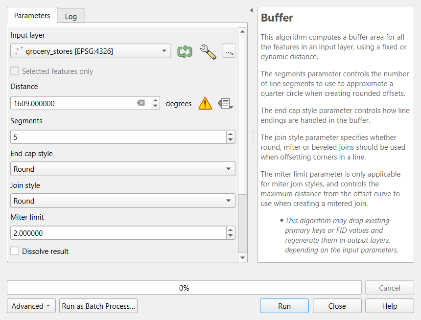
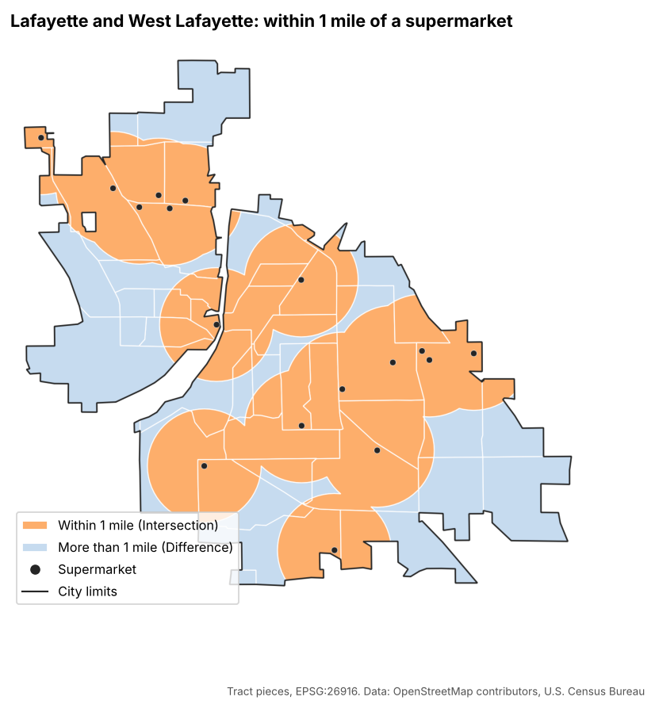
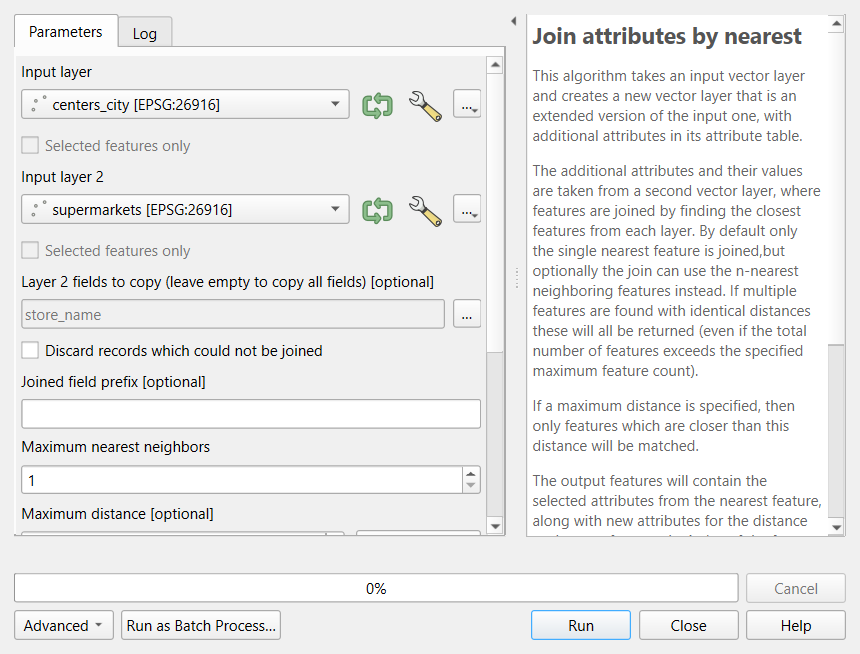

All Images
Geoprocessing in Python
Figure 1
Image 1 of 1: ‘Six small diagrams. Inputs: three store points, four square tracts drawn with gray lines and a city boundary outline. 1. Buffer: an orange circle around each point; the circles overlap. 2. Dissolve: the circles merged into one orange shape with no inner lines. 3. Clip: the four tracts cut to the city outline, shaded blue. 4. Intersect: only the parts of the clipped tracts that fall inside the merged circles, shaded orange, still split along tract lines. 5. Difference: the parts of the clipped tracts outside the circles, shaded blue.’
![Six small diagrams. Inputs: three store points, four square tracts drawn with gray lines and a city boundary outline. 1. Buffer: an orange circle around each point; the circles overlap. 2. Dissolve: the circles merged into one orange shape with no inner lines. 3. Clip: the four tracts cut to the city outline, shaded blue. 4. Intersect: only the parts of the clipped tracts that fall inside the merged circles, shaded orange, still split along tract lines. 5. Difference: the parts of the clipped tracts outside the circles, shaded blue.](../da_geoprocessing_ops.png)
Geoprocessing in QGIS
Figure 1
Image 1 of 1: ‘Six small diagrams. Inputs: three store points, four square tracts drawn with gray lines and a city boundary outline. 1. Buffer: an orange circle around each point; the circles overlap. 2. Dissolve: the circles merged into one orange shape with no inner lines. 3. Clip: the four tracts cut to the city outline, shaded blue. 4. Intersect: only the parts of the clipped tracts that fall inside the merged circles, shaded orange, still split along tract lines. 5. Difference: the parts of the clipped tracts outside the circles, shaded blue.’
Figure 2
Image 1 of 1: ‘Screenshot of the QGIS Buffer tool with the grocery_stores layer in EPSG:4326 as input. The distance box reads 1609 and the unit next to it says degrees, followed by a yellow triangle warning icon. Its tooltip reads: Distance is in geographic degrees. Consider reprojecting to a projected local coordinate system for accurate results.’

Figure 3
Image 1 of 1: ‘Screenshot of the QGIS Buffer tool. Input layer is supermarkets in EPSG:26916, Distance is 1609 meters, Segments is 16, End cap style and Join style are Round, Miter limit is 2, and Dissolve result is unchecked. The help panel on the right explains the segments, end cap and join style parameters.’

Figure 4
Image 1 of 1: ‘Screenshot of the QGIS Select by Location tool. Select features from is tracts_utm, the geometric predicate intersect is ticked and the others (contain, disjoint, equal, touch, overlap, are within, cross) are not, By comparing to the features from is zone, and Modify current selection by is creating new selection.’

Figure 5
Image 1 of 1: ‘Screenshot of the QGIS Field Calculator for the tracts_city layer. Create a new field is checked, Output field name is pop_in_city, Output field type is Decimal Number (real) with length 10 and precision 3. The expression box contains area($geometry) divided by tract_m2 times total_pop, and the preview for Census Tract 1 reads 2593.56. A note at the bottom says edit mode will be turned on automatically when OK is clicked.’

Figure 6
Image 1 of 1: ‘Map of Lafayette and West Lafayette titled within 1 mile of a supermarket. The city area is split along census tract lines into orange pieces within 1 mile of one of 17 supermarkets (black dots) and light blue pieces farther away. Most of the central and eastern city is orange; the light blue areas are along the northern, western and southeastern edges of the city and in a band along the river.’

Figure 7
Image 1 of 1: ‘Screenshot of the QGIS Join attributes by nearest tool. Input layer is centers_city, Input layer 2 is supermarkets, Layer 2 fields to copy is store_name, Discard records which could not be joined is unchecked, Joined field prefix is empty and Maximum nearest neighbors is 1. The help panel explains that attributes are taken from the closest feature in the second layer.’

Network Analysis
Figure 1
Image 1 of 1: ‘Diagram of a small road network with eight intersections (nodes), the start A, the end B and six numbered ones, joined by road segments (edges), each labeled with its length in meters. A one-way street is drawn with an arrow. A dashed gray bracket under the network marks the straight-line distance from A to B, 700 meters. A thick orange line follows the edges from A to B along the shortest route, labeled network route, 1,150 meters, because a river with only one bridge forces a detour.’

Spatial Autocorrelation with PySAL
Figure 1
Image 1 of 1: ‘Three panels. Left, Rook contiguity: a 5 by 5 grid of square cells with the center cell in dark orange and the four cells sharing an edge with it (above, below, left and right) in light orange. Middle, Queen contiguity: the same grid with the eight surrounding cells, including the diagonal corners, in light orange. Right, K-nearest neighbors with k equal to 4: scattered points of uneven spacing, one dark orange point joined by lines to its four closest points; the number of neighbors is always four, however near or far they are.’
![Three panels. Left, Rook contiguity: a 5 by 5 grid of square cells with the center cell in dark orange and the four cells sharing an edge with it (above, below, left and right) in light orange. Middle, Queen contiguity: the same grid with the eight surrounding cells, including the diagonal corners, in light orange. Right, K-nearest neighbors with k equal to 4: scattered points of uneven spacing, one dark orange point joined by lines to its four closest points; the number of neighbors is always four, however near or far they are.](../da_spatial_weights.png)
Spatial Clustering
Figure 1
Image 1 of 1: ‘Three panels of the same synthetic points: three dense groups of different sizes and shapes, one of them long and curved, plus scattered points across the whole area. Left, K-Means with k equal to 3: every point is colored, the area is split into three regions, and the scattered points are assigned to the nearest group. Middle, DBSCAN: the three dense groups are colored, the curved group is kept whole, and the scattered points are gray noise. Right, a close-up explaining DBSCAN with a circle of radius eps around points: core points with at least five points inside a circle of radius eps, a border point inside a core point's circle but with few neighbors of its own, and an isolated noise point.’
![Three panels of the same synthetic points: three dense groups of different sizes and shapes, one of them long and curved, plus scattered points across the whole area. Left, K-Means with k equal to 3: every point is colored, the area is split into three regions, and the scattered points are assigned to the nearest group. Middle, DBSCAN: the three dense groups are colored, the curved group is kept whole, and the scattered points are gray noise. Right, a close-up explaining DBSCAN with a circle of radius eps around points: core points with at least five points inside a circle of radius eps, a border point inside a core point's circle but with few neighbors of its own, and an isolated noise point.](../da_clustering.png)
NDVI Analysis
Figure 1
Image 1 of 1: ‘Line chart of reflectance (0 to 0.5) against wavelength (0.4 to 1.0 micrometers), with illustrative curves. Green vegetation is low in blue and red, with a small bump in green, then rises steeply after about 0.7 micrometers to about 0.45 in the near infrared. Bare soil rises gently from about 0.1 to 0.3. Water is low everywhere and falls to almost 0 in the near infrared. Two shaded bands mark Landsat 8 and 9 Band 4 (red, about 0.64 to 0.67 micrometers) and Band 5 (near infrared, about 0.85 to 0.88 micrometers). Labels give the resulting NDVI: vegetation 0.83, soil 0.15, water minus 0.55.’
![Line chart of reflectance (0 to 0.5) against wavelength (0.4 to 1.0 micrometers), with illustrative curves. Green vegetation is low in blue and red, with a small bump in green, then rises steeply after about 0.7 micrometers to about 0.45 in the near infrared. Bare soil rises gently from about 0.1 to 0.3. Water is low everywhere and falls to almost 0 in the near infrared. Two shaded bands mark Landsat 8 and 9 Band 4 (red, about 0.64 to 0.67 micrometers) and Band 5 (near infrared, about 0.85 to 0.88 micrometers). Labels give the resulting NDVI: vegetation 0.83, soil 0.15, water minus 0.55.](../da_spectral_signatures.png)